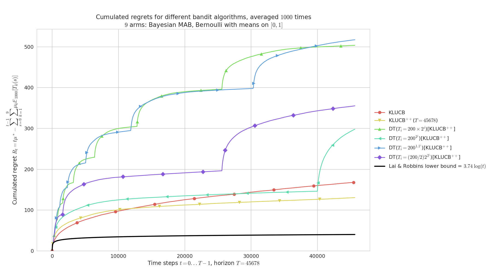

Some illustrations for this project¶
Here are some plots illustrating the performances of the different policies implemented in this project, against various problems (with Bernoulli arms only):
Histogram of regrets at the end of some simulations¶
On a simple Bernoulli problem, we can compare 16 different algorithms (on a short horizon and a small number of repetitions, just as an example).
If we plot the distribution of the regret at the end of each experiment, R_T, we can see this kind of plot:
Histogramme_regret_monoplayer_2.png
It helps a lot to see both the mean value (in solid black) of the regret, and its distribution of a few runs (100 here). It can be used to detect algorithms that perform well in average, but sometimes with really bad runs. Here, the Exp3++ seems to had one bad run.
Demonstration of different Aggregation policies¶
On a fixed Gaussian problem, aggregating some algorithms tuned for this exponential family (ie, they know the variance but not the means). Our algorithm, Aggregator, outperforms its ancestor Exp4 as well as the other state-of-the-art experts aggregation algorithms, CORRAL and LearnExp.
 main____env3-4_932221613383548446.png
main____env3-4_932221613383548446.png
Demonstration of multi-player algorithms¶
Regret plot on a random Bernoulli problem, with M=6 players accessing independently and in a decentralized way K=9 arms.
Our algorithms (RandTopM and MCTopM, as well as Selfish) outperform the state-of-the-art rhoRand:
 MP__K9_M6_T5000_N500__4_algos__all_RegretCentralized____env1-1_8318947830261751207.png
MP__K9_M6_T5000_N500__4_algos__all_RegretCentralized____env1-1_8318947830261751207.png
Histogram on the same random Bernoulli problems. We see that some all algorithms have a non-negligible variance on their regrets.
 MP__K9_M6_T10000_N1000__4_algos__all_HistogramsRegret____env1-1_8200873569864822246.png
MP__K9_M6_T10000_N1000__4_algos__all_HistogramsRegret____env1-1_8200873569864822246.png
Comparison with two other “state-of-the-art” algorithms (MusicalChair and MEGA, in semilogy scale to really see the different scale of regret between efficient and sub-optimal algorithms):
MP__K9_M3_T123456_N100__8_algos__all_RegretCentralized_semilogy____env1-1_7803645526012310577.png
Other illustrations¶
Piece-wise stationary problems¶
Comparing Sliding-Window UCB and Discounted UCB and UCB, on a simple Bernoulli problem which regular random shuffling of the arm.
 Demo_of_DiscountedUCB2.png
Demo_of_DiscountedUCB2.png
Sparse problem and Sparsity-aware algorithms¶
Comparing regular UCB, klUCB and Thompson sampling against “sparse-aware” versions, on a simple Gaussian problem with K=10 arms but only s=4 with non-zero mean.
 Demo_of_SparseWrapper_regret.png
Demo_of_SparseWrapper_regret.png
Demonstration of the Doubling Trick policy¶
- On a fixed problem with full restart:
 main____env1-1_3633169128724378553.png
main____env1-1_3633169128724378553.png - On a fixed problem with no restart:
 main____env1-1_5972568793654673752.png
main____env1-1_5972568793654673752.png - On random problems with full restart: main____env1-1_1217677871459230631.png
- On random problems with no restart:
 main____env1-1_5964629015089571121.png
main____env1-1_5964629015089571121.png
Plots for the JMLR MLOSS paper¶
In the JMLR MLOSS paper I wrote to present SMPyBandits,
an example of a simulation is presented, where we compare the standard anytime klUCB algorithm against the non-anytime variant klUCBPlusPlus algorithm, and also UCB (with (\alpha=1)) and Thompson (with Beta posterior).
configuration["policies"] = [
{ "archtype": klUCB, "params": { "klucb": klucbBern } },
{ "archtype": klUCBPlusPlus, "params": { "horizon": HORIZON, "klucb": klucbBern } },
{ "archtype": UCBalpha, "params": { "alpha": 1 } },
{ "archtype": Thompson, "params": { "posterior": Beta } }
]
Running this simulation as shown below will save figures in a sub-folder, as well as save data (pulls, rewards and regret) in HDF5 files.
# 3. run a single-player simulation
$ BAYES=False ARM_TYPE=Bernoulli N=1000 T=10000 K=9 N_JOBS=4 \
MEANS=[0.1,0.2,0.3,0.4,0.5,0.6,0.7,0.8,0.9] python3 main.py configuration.py
The two plots below shows the average regret for these 4 algorithms. The regret is the difference between the cumulated rewards of the best fixed-armed strategy (which is the oracle strategy for stationary bandits), and the cumulated rewards of the considered algorithms.
- Average regret:
 paper/3.png
paper/3.png - Histogram of regrets: paper/3_hist.png
Example of a single-player simulation showing the average regret and histogram of regrets of 4 algorithms. They all perform very well: each algorithm is known to be order-optimal (i.e., its regret is proved to match the lower-bound up-to a constant), and each but UCB is known to be optimal (i.e. with the constant matching the lower-bound). For instance, Thomson sampling is very efficient in average (in yellow), and UCB shows a larger variance (in red).
Saving simulation data to HDF5 file¶
This simulation produces this example HDF5 file,
which contains attributes (e.g., horizon=10000, repetitions=1000, nbPolicies=4),
and a collection of different datasets for each environment.
Only one environment was tested, and for env_0 the HDF5 stores some attributes (e.g., nbArms=9 and means=[0.1,0.2,0.3,0.4,0.5,0.6,0.7,0.8,0.9])
and datasets (e.g., bestArmPulls of shape (4, 10000), cumulatedRegret of shape (4, 10000), lastRegrets of shape (4, 1000), averageRewards of shape (4, 10000)).
See the example:
GitHub.com/SMPyBandits/SMPyBandits/blob/master/plots/paper/example.hdf5.
Note: HDFCompass is recommended to explore the file from a nice and easy to use GUI. Or use it from a Python script with h5py or a Julia script with HDF5.jl. Example of exploring this 'example.hdf5' file using HDFCompass
Graph of time and memory consumptions¶
Time consumption¶
Note that I had added a very clean support for time consumption measures, every simulation script will output (as the end) some lines looking like this:
Giving the mean and std running times ...
For policy #0 called 'UCB($\alpha=1$)' ...
84.3 ms ± 7.54 ms per loop (mean ± std. dev. of 10 runs)
For policy #1 called 'Thompson' ...
89.6 ms ± 17.7 ms per loop (mean ± std. dev. of 10 runs)
For policy #3 called 'kl-UCB$^{++}$($T=1000$)' ...
2.52 s ± 29.3 ms per loop (mean ± std. dev. of 10 runs)
For policy #2 called 'kl-UCB' ...
2.59 s ± 284 ms per loop (mean ± std. dev. of 10 runs)
 Demo_of_automatic_time_consumption_measure_between_algorithms
Demo_of_automatic_time_consumption_measure_between_algorithms
Memory consumption¶
Note that I had added an experimental support for time consumption measures, every simulation script will output (as the end) some lines looking like this:
Giving the mean and std memory consumption ...
For players called '3 x RhoRand-kl-UCB, rank:1' ...
23.6 KiB ± 52 B (mean ± std. dev. of 10 runs)
For players called '3 x RandTopM-kl-UCB' ...
1.1 KiB ± 0 B (mean ± std. dev. of 10 runs)
For players called '3 x Selfish-kl-UCB' ...
12 B ± 0 B (mean ± std. dev. of 10 runs)
For players called '3 x MCTopM-kl-UCB' ...
4.9 KiB ± 86 B (mean ± std. dev. of 10 runs)
For players called '3 x MCNoSensing($M=3$, $T=1000$)' ...
12 B ± 0 B (mean ± std. dev. of 10 runs)
 Demo_of_automatic_memory_consumption_measure_between_algorithms
Demo_of_automatic_memory_consumption_measure_between_algorithms
It is still experimental!
üìú License ?  GitHub license¬∂
GitHub license¶
MIT Licensed (file LICENSE).
© 2016-2018 Lilian Besson.
Open Source? Yes!
 Maintenance
Maintenance
 Ask Me Anything !
Ask Me Anything !
Analytics
 PyPI version
PyPI version
 PyPI implementation
PyPI implementation
 PyPI pyversions
PyPI pyversions
Documentation Status
 Build Status
Build Status
Stars of https://github.com/SMPyBandits/SMPyBandits/
Releases of https://github.com/SMPyBandits/SMPyBandits/